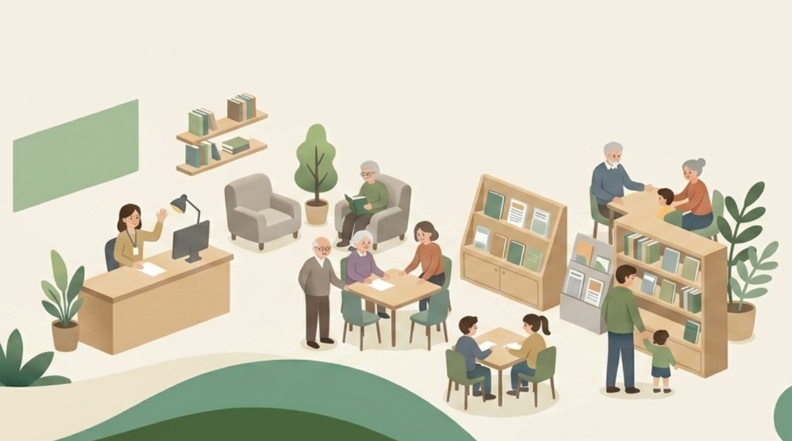
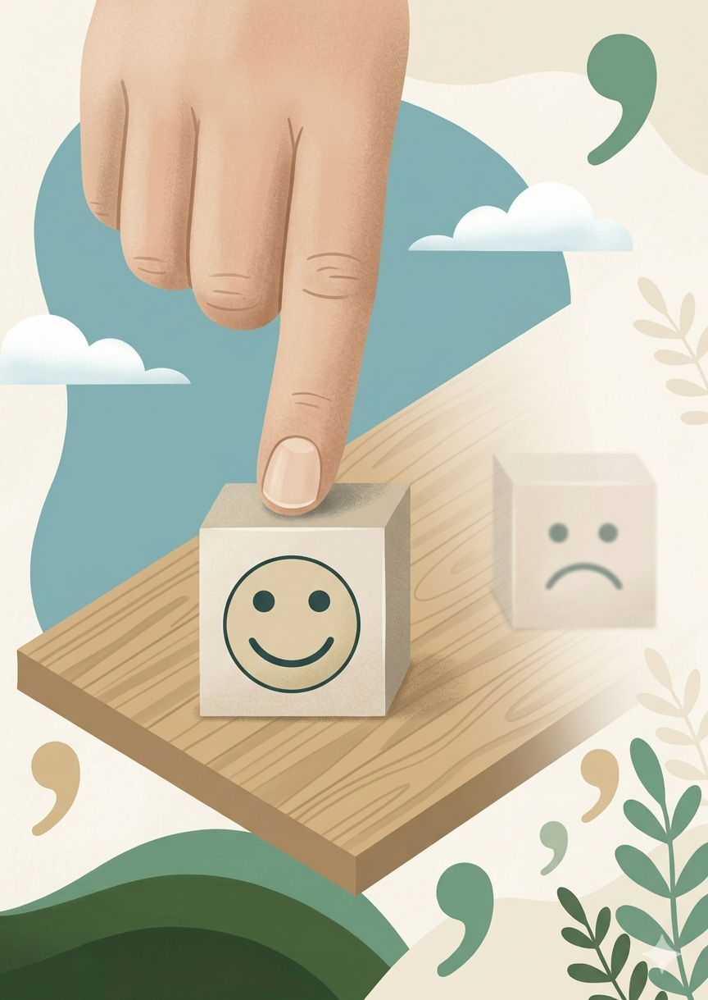
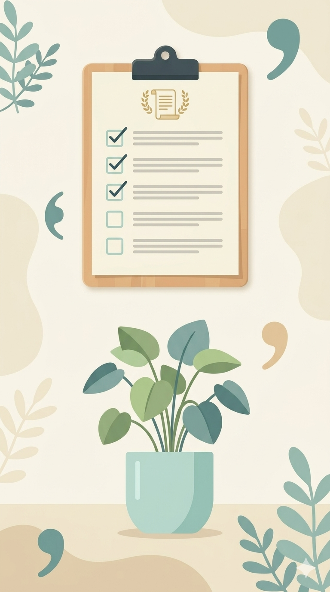

Mind & Cognitive Behavioral Therapy
마음, 인지행동심리상담센터는 근거 기반의 인지행동치료(CBT)를 통해 개인의 심리적 회복과 성장을 돕는 전문 기관입니다. 정신과 병원과의 협업을 통해 의학적 소견과 심리학적 개입의 균형을 유지하고 있습니다.


상담 내용의 비밀보장이 우선시 되므로 안심하고 상담을 받으실 수 있습니다.
의료기록이나 상담기록이 남지 않아, 직장, 보험, 등 외부유출의 걱정이 없습니다.
정신증, 신경증과 같이 심층적이고 깊은 관리가 필요하신 분들은 내담자와 보호자의 요청이 있을시 연계관리를 받으실 수 있습니다. 다른 기관과 차별호된 다층적이고 효율적인 관리를 받으실 수 있습니다.
다양한 도움이 필요한분들이 요청이 있을시, 지역의 다양한 인프라 활동을 하실수 있도록, 기관 연계, 협업을 안내 및 연결해 드립니다.